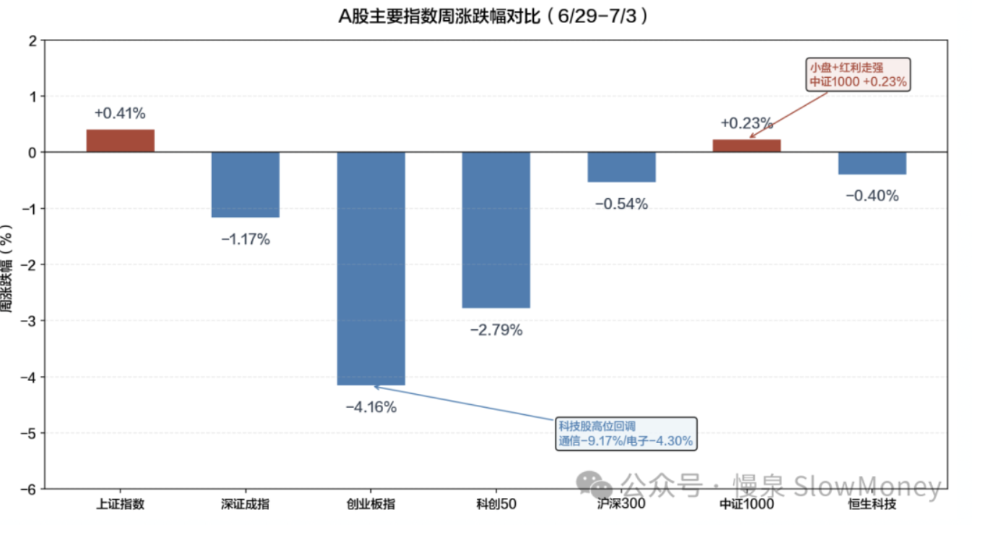
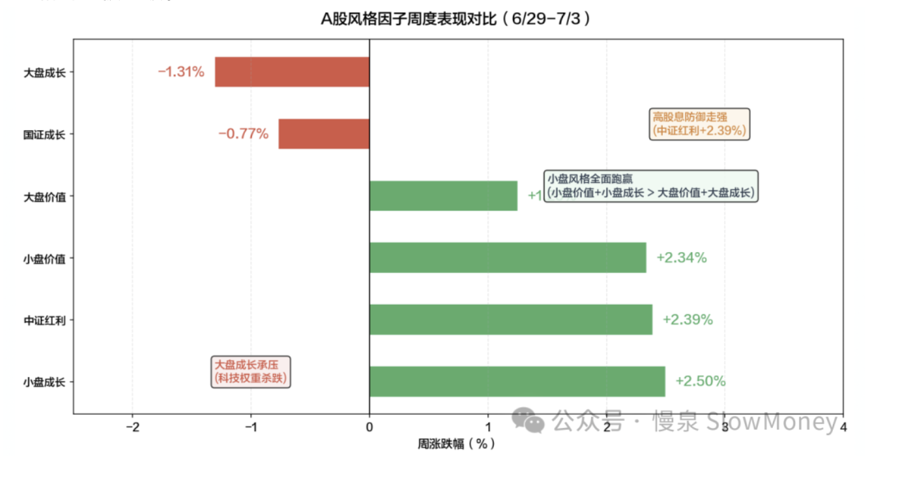

投资备忘20260705-过去五年茅台是怎么过的
2026-06-29 — 2026-07-05 · W27 · 周度备忘（补档）
话说"过了半年……就过年"，市场的日历效应还是很明显：投资者在六月最后几个交易日集中精力拉重仓股，让半年末的业绩显得好看点，修复 6/26 的下跌。但是过了半年末的时点，大盘迎来了下跌的同时，迎来了结构性的调整——AI 和半导体出点血，也够医药、资源 HIGH 几天。"大河有水小河满、大河无水小河干"的古训在资本市场当下完全无效，现在就是大河有水小河干、大河漏水小河满。不过抱团股的下跌不是一蹴而就，从茅台的过程来看：quickly、slowly、then suddenly。
茅台：知道过去的五年我是怎么过的么？
总体上：刚开始 quickly，然后会出现明显的修复，因为业绩恶化是慢变量；然后 slowly，通过不断的震荡消化估值和资金，弱相对收益，温水煮青蛙；最后 suddenly，基本面的恶化突然压垮"温水中的青蛙"，基本面和估值快速压缩——从稀缺性溢价 + "永续增长"叙事到戴维斯双杀。
茅台的下跌不是"一步到位"的暴跌，持续了五年尚未完成。茅台的问题不仅仅是茅台的问题，而是整个白酒行业正在经历库存周期、消费和渠道变化：
库存周期：连续三年"去库存"
- 2024 年，A 股 20 家白酒上市公司存货达 1,683.89 亿元，同比增加 192.9 亿元；
- 2025 年上半年，58.1% 的经销商反映库存继续增加；
- 价格倒挂普遍存在：800–1,500 元、500–800 元价位段倒挂最为严重；茅台批价（飞天原箱）从 2021 年高峰的 3,200+ 元跌至 2025 年 9 月的 1,810 元，虽有阶段性企稳但趋势向下。
消费变迁：需求端三重萎缩
- 政务消费：2025 年 5 月修订的《党政机关厉行节约反对浪费条例》将禁酒范围扩展至所有含酒精饮料，虽政务消费占比已不高，但信号意义强烈；
- 商务消费：经济下行 + 投资活动萎缩 → 商务宴请频次和标准双降；
- 个人消费：85 后–94 后年轻群体对高度白酒偏好显著低于前几代人，"低度化""微醺化"是消费趋势。
渠道变革：直销替代批发，价格体系重构
茅台近年来大力发展直营渠道（i 茅台 APP 等），直销占比从 2021 年的约 20% 提升至 2025 年的 45%+。这虽然提高了出厂均价，但也冲击了传统经销体系的利益格局、使得批价体系更加透明——囤货投机需求被挤出、经销商利润被压缩 → 渠道推力下降。
泡沫过程：杀估值是泡沫破裂的声音
| 下跌分解 | 贡献 | 说明 |
|---|---|---|
| 估值压缩（PE 70x → 18x） | ~45% | 从"永续增长"到"类债定价"的叙事切换 |
| 盈利放缓（增速 +19% → -4.5%） | ~10% | 营收首降，净利下滑，行业逆风 |
| 相对配置转移（资金流向科技） | 额外压力 | 不是绝对值跌，而是相对排名暴跌 |
| 时间 | 估值（PE） | 阶段 |
|---|---|---|
| 2021 年 2 月（顶部） | 70 倍+ | 稀缺性溢价 + "永续增长"叙事 |
| 2021 年底 | 45–50 倍 | 政策打压后修复 |
| 2022 年底 | 30–35 倍 | 熊市估值收缩 |
| 2024 年 | 20–25 倍 | 业绩增长 + 估值消化 |
| 2025 年至今 | 18–20 倍 | 盈利负增长 + 股息率逻辑接替 |
| 2026.07.03 | 18.05 倍 | 历史最低估值区间 |
本周市场
本周呈现典型"冲高回落、宽幅震荡"格局。上证指数周一至周三连续上行，7/1 盘中最高触及 4112.45 点，随后周四大幅回调（-2.03%），周五小幅反弹收于 4043.64。上证周线勉强收红（+0.41%），但深证成指（-1.17%）和创业板指（-4.16%）明显走弱。最大的结构变化是：科技权重高位杀跌（通信 -9.17% / 电子 -4.30%），低位板块大面积崛起（医药 +10.53% / 汽车 +4.57%~7.06%），市场从"科技一枝独秀"转向"高切低扩散"。
| 指数 | 本周涨跌幅 |
|---|---|
| 上证指数 | +0.41% |
| 中证 1000（小盘 + 红利走强） | +0.23% |
| 沪深 300 | -0.54% |
| 恒生科技 | -0.40% |
| 深证成指 | -1.17% |
| 科创 50 | -2.79% |
| 创业板指（科技股高位回调：通信 -9.17% / 电子 -4.30%） | -4.16% |

结构上："高切低"是本周最核心的风格特征。小盘组合（价值 +2.34% / 成长 +2.50%）全面碾压大盘组合（价值 +1.25% / 成长 -1.31%）。这不是"成长整体退潮"，而是成长内部的高低切换：从大市值科技龙头（寒武纪周跌约 -8.7% / 中际旭创周跌约 -8.5%）向中小市值方向（机器人 / 汽车零部件 / 家电）扩散。中证红利 +2.39% 的强势表现说明防御型资金也在积极寻找替代方向。上周（6/22–26）大盘价值 -3.06% 垫底、科创 50 +6.32% 一骑绝尘的极端分化格局已被打破。

市场展望：少看指数、多看结构
仓位：当前市场由流动性与风险偏好驱动，核心支撑来自日均 3.5 万亿的超高成交和 AI 产业业绩爆发。但这种驱动模式极度脆弱，一旦风险偏好逆转，高杠杆会放大下行速度。市场资金极度短期化和亢奋，成交量和两融均在历史高位，而且市场下跌的几个交易日两融并没有去化。
结构的重要性远高于指数本身——永续增长的科创和没有增长的沪深 300。
- 新方向：需要关注中报、HALO 资产和月底政治局会议影响；
- 风险：海外调整的风险仍然有待定价。
组合备忘
Beta 组合表现大幅跑赢市场（市场指 Wind 全 A 指数），Macro 同样。组合仓位整体上行：在 4100 以上降低科技仓位，下跌阶段收集其他方向筹码。Beta 策略仓位 67% 附近，利用市场结构性的波动增加交易性持仓，寻找可持续现金流资产；Macro 策略仓位提升至 65%（其中转债 30%），整体保持谨慎。组合的表现主要受到以下因素影响：
- 风格在本周出现较大的切换，组合持仓的红利资产在六月份持续下跌的情况下，呈现企稳反弹的走势——风格短期对组合有利；
- AI 科技持仓增加交易，快速上涨时减仓增加高分红、暴跌时加仓——通过交易一方面对科技业绩兑现保持跟踪，同时增厚收益；
- 机器人方向有表现，带动组合上涨。
| 类别 | 仓位 |
|---|---|
| Beta 策略（结构性波动中增加交易性持仓） | ≈67% |
| Macro 策略权益仓位（含转债 30%，整体保持谨慎） | 65% |
Beta 大幅跑赢市场 · Macro 同样跑赢 · 周度涨幅不再公开播报
操作和思考：上周的主要操作——上半周科技上涨减少科技 AI、增加中报改善主题资产和 HALO 资产；下半周部分买回部分科技 AI 资产。Macro 也增加了科技的交易和转债持仓。
下一步操作：仓位在震荡阶段维持，外围风险释放下跌时增加仓位，但组合控制在 70% 以内。指数宽幅 4000–4150 区间震荡、考验 4000 点的概率增加，方向上继续买入中报改善主题资产和 HALO 资产，交易科技资产。
抱团股的下跌不是一蹴而就——quickly、slowly、then suddenly。茅台用了五年走到历史最低估值区间，杀估值是泡沫破裂的声音。
上期钩子的答案：① 4000 以下加仓计划——指数未测试 4000（周内高点 4112、收 4043），区间上移为 4000–4150，考验 4000 概率增加、加仓计划顺延；② 中报 + 政治局会议——中报改善主题已在持续买入，政治局会议仍待月底验证；③ PMI 6 月是否破 50——本期原文未提及，继续挂起；④ 港股谨慎建仓——恒科 -0.40% 初步企稳，仍未建仓。本周最大的变化是风格：六月底拉重仓股修复半年末业绩 → 七月初高切低扩散，红利企稳反弹、组合两周连赢。新钩子：① 茅台式 "quickly-slowly-suddenly" 剧本是否适用于 AI 抱团（现在是 quickly 后的修复期？）；② 高切低扩散的持续性（医药 +10.53% 能否接棒）；③ 4000 点考验与 70% 仓位上限的兑现。对账窗口：2026 年 7 月中下旬。